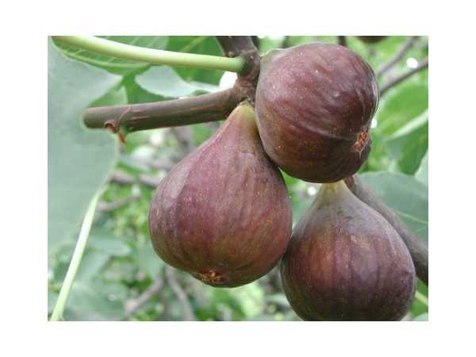

Ficus carica
Common Names: Pune Red Fig, Indian Red Fig, Common Fig (Pune variety)
Local Name: Anjeer (Hindi/Marathi), Atti Pazham (Tamil), Anjura (Kannada)
Family: Moraceae
Origin: Middle East and Western Asia; Pune Red is an Indian selection
Plant Type: Perennial deciduous to semi-deciduous tree
Variety: Pune Red — Indian selection with red-skinned, sweet fruits; well-adapted to Indian climate
Average Lifespan: 30–50+ years
| Growth Habit | Small to medium deciduous tree; spreading, multi-stemmed; milky latex in all parts |
| Plant Size | 3–6 meters tall; canopy spread 3–5 meters |
| Leaves | Alternate, deeply 3–5 lobed; 10–25 cm long; rough texture; bright green; deciduous in winter |
| Flowers | Tiny flowers enclosed within the syconium (fig); not visible externally |
| Flower Characteristics | Parthenocarpic (no pollination needed); figs develop without fig wasps in most cultivated varieties |
| Fruit | Pear-shaped to round syconium; 4–7 cm; red-purple skin; sweet, jammy red flesh |
| Fruit Color | Red to deep red-purple skin; pink-red flesh inside |
| Seed Characteristics | Numerous tiny seeds (achenes) within the syconium; edible |
| Root System | Extensive, aggressive surface and deep roots; very drought-tolerant |
| Climate | Subtropical to tropical; tolerates hot, dry conditions; needs cool dormancy period |
| Temperature Range | 10–40°C; tolerates mild frost; dormant in cool winters |
| Rainfall Requirement | 400–800 mm; drought-tolerant; excess rain causes fruit splitting |
| Soil Type | Well-drained sandy loam to loam; tolerates poor soils; dislikes waterlogging |
| Soil pH Preference | 6.0–8.0; tolerates slightly alkaline soils |
| Sun Requirement | Full sun (6+ hours daily) |
| Spacing | 4–6 meters between trees |
| Irrigation Method | Drip or basin; reduce during ripening to prevent fruit splitting |
| Water Requirement | Low to moderate; drought-tolerant; avoid excess moisture during fruiting |
| Can it Grow in Pots? | Yes, excellent in large pots (40–60 liters); root restriction promotes fruiting |
| Fertilizer Schedule | 3 times per year; spring (pre-growth), summer (fruiting), post-harvest |
| Recommended Organic Fertilizers | FYM, vermicompost, neem cake, bone meal, wood ash |
| Pesticide Frequency | As needed; generally low pest pressure |
| Recommended Organic Pesticides | Neem oil for scale and mealybugs; fruit bagging for fruit fly |
| Mulching Practice | Heavy organic mulch to retain moisture and regulate soil temperature |
| Training System | Open center or multi-stem; keep low for easy harvest |
| Pruning Time | During dormancy (December–January); after harvest |
| How to Prune | Remove dead wood; thin crowded branches; cut back by one-third to promote new fruiting wood |
| Common Pests | Fig fruit fly, scale insects, mealybugs, birds |
| Common Diseases | Fruit rot, rust, root rot in waterlogged soils |
| Disease Prevention & Remedies | Good drainage; harvest ripe fruits promptly; fruit bagging; copper fungicide for rust |
| Flowering Months | Figs initiate after leaf flush; March–April (breba crop) and June–July (main crop) |
| Fruiting Season | Two crops: June–July (breba) and September–November (main crop) |
| Days to Harvest | 60–90 days from fig initiation to ripeness |
| Harvest Indicators | Fruit turns deep red; soft to touch; neck droops; sweet aroma; slight cracking at eye |
| Average Yield per Plant | 15–40 kg per tree (mature) |
| Pollination Type | Parthenocarpic (no pollination needed) |
| Pollination Notes | Pune Red is parthenocarpic; fruits develop without pollination; single tree is sufficient |
| Pollination Details | Parthenocarpic; no pollinator needed; self-sufficient |
| Propagation by Seeds | Not recommended; seeds may not come true to variety |
| Propagation by Cuttings | Hardwood cuttings (20–30 cm) root very easily; preferred method; fruits in 1–2 years |
| Propagation by Grafting | Cleft or T-budding on Ficus carica seedling rootstock; air layering also effective |
| Water Usage | Very low; one of the most drought-tolerant fruit trees |
| Soil Conservation Practices | Deep roots prevent soil erosion; grows on marginal and rocky soils |
| Organic Practices Used | Minimal inputs; naturally robust; compost-based feeding |
| Companion Plants | Leguminous cover crops; basil; marigold as pest deterrent |
| Biodiversity Benefits | Fruits feed birds and bats; supports orchard biodiversity |
| Commercial Production Regions | India (Maharashtra, Karnataka, Andhra Pradesh), Turkey, Egypt, Morocco |
| Market Uses | Fresh fruit, dried figs, jam, health food market |
| Processing Uses | Dried figs, fig jam, fig paste, fig wine, health supplements |
| Market Value (Approx.) | ₹80–200 per kg fresh; ₹400–800 per kg dried; grafted plants ₹200–500 |
| Symbolism | Sacred in Islam, Christianity, and Judaism; mentioned in the Quran and Bible; symbol of abundance |
| Traditional Uses | Dried figs used in Ayurveda for respiratory health; latex used for wart removal; fruit for constipation |
| Calories | 74 kcal per 100g (fresh) |
| Dietary Fiber | 2.9 g per 100g |
| Vitamin C | 2 mg per 100g |
| Potassium | 232 mg per 100g |
| Antioxidants | Polyphenols, anthocyanins (red skin), flavonoids |
| Other Key Nutrients | Calcium, iron, magnesium, vitamin B6, copper |
| Digestive Health | High fiber content aids digestion; natural laxative; used for constipation in Ayurveda |
| Anti-inflammatory Properties | Polyphenols and flavonoids show anti-inflammatory activity |
| Heart Health | Potassium and fiber support cardiovascular health |
Disclaimer: Information provided is for educational purposes only and not a substitute for medical advice.
Add your field observations here.